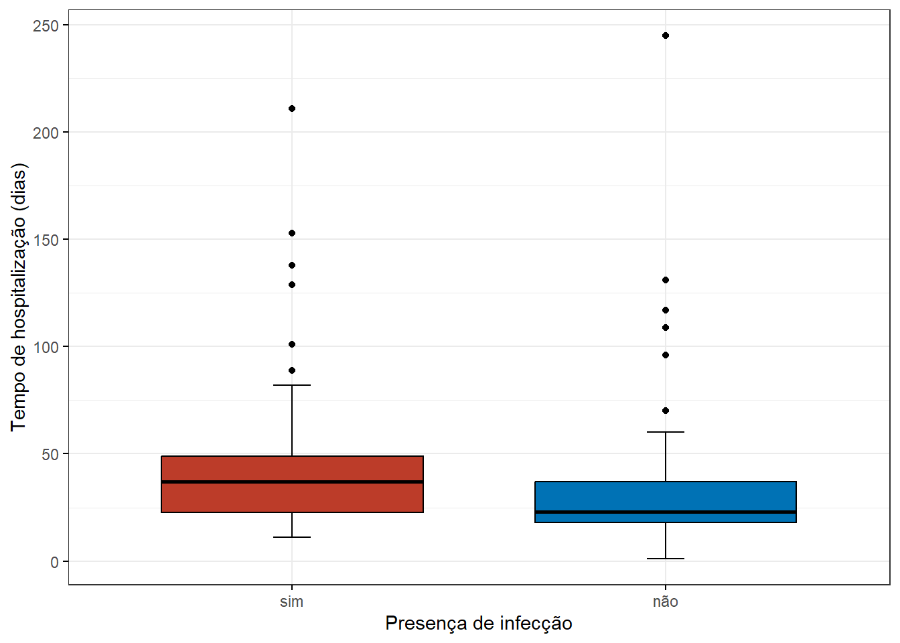
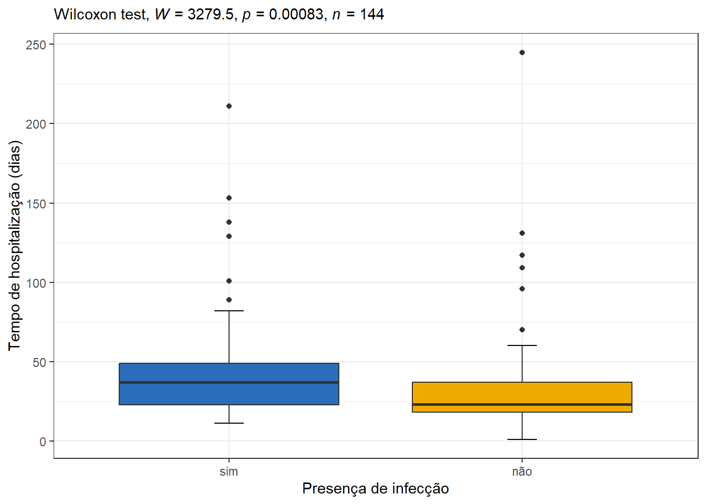
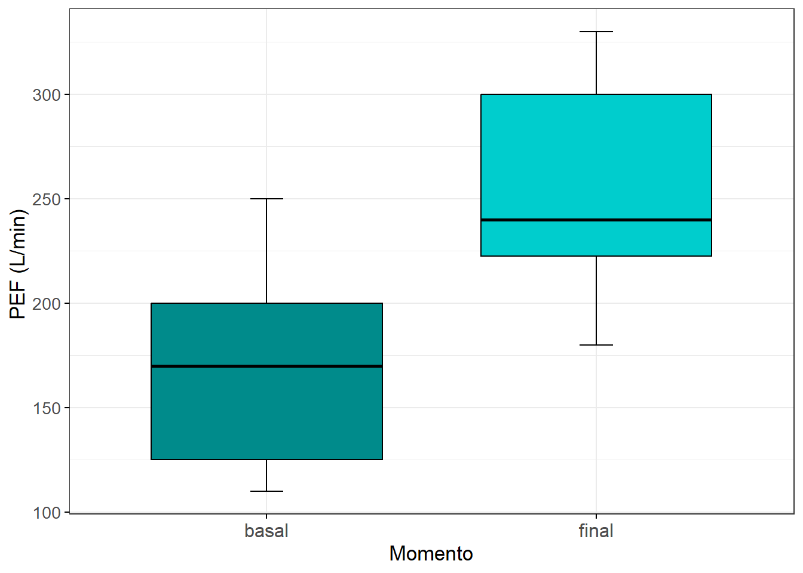
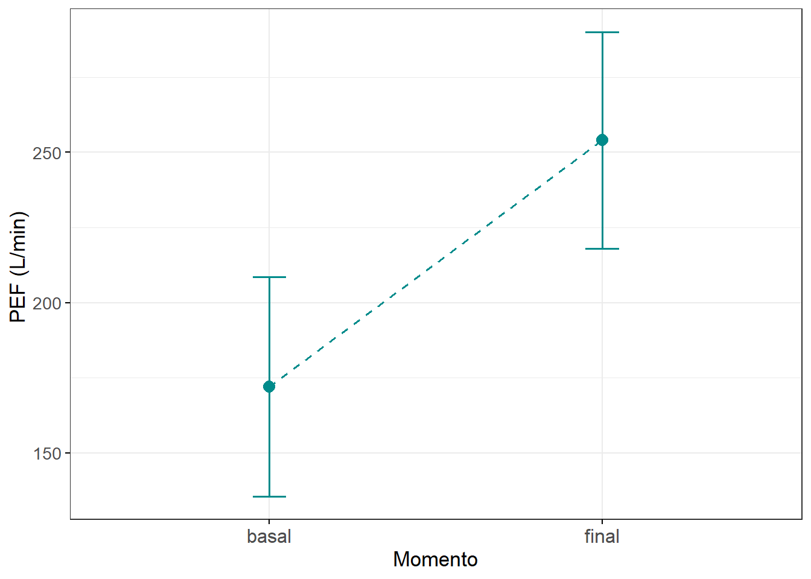
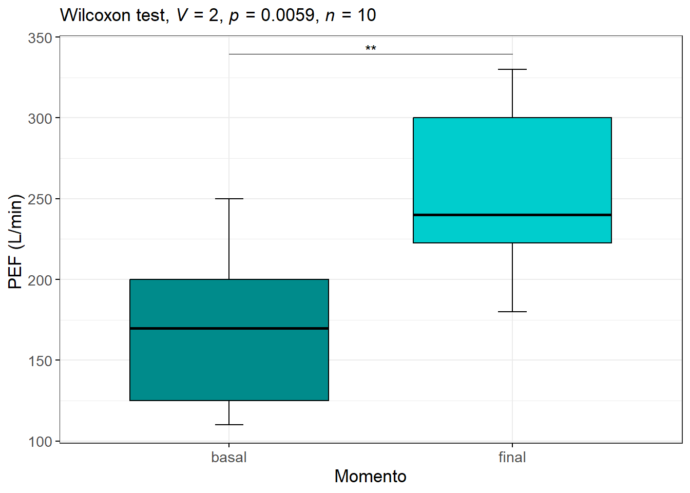
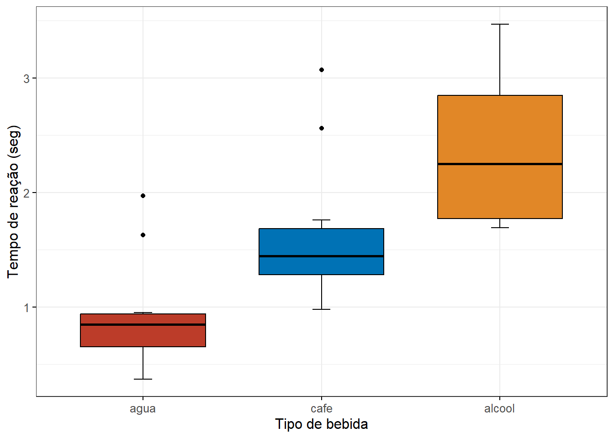
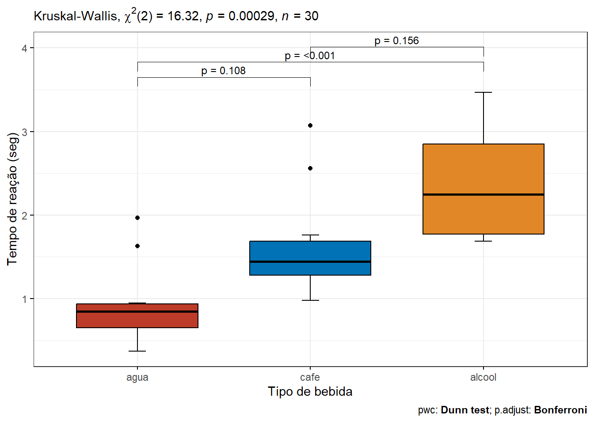
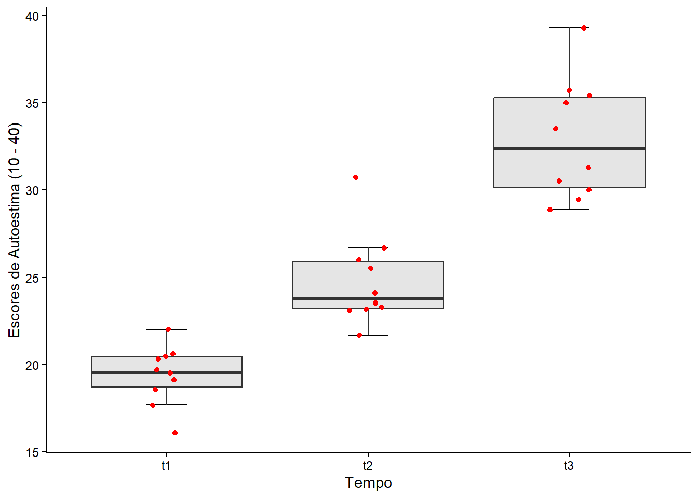
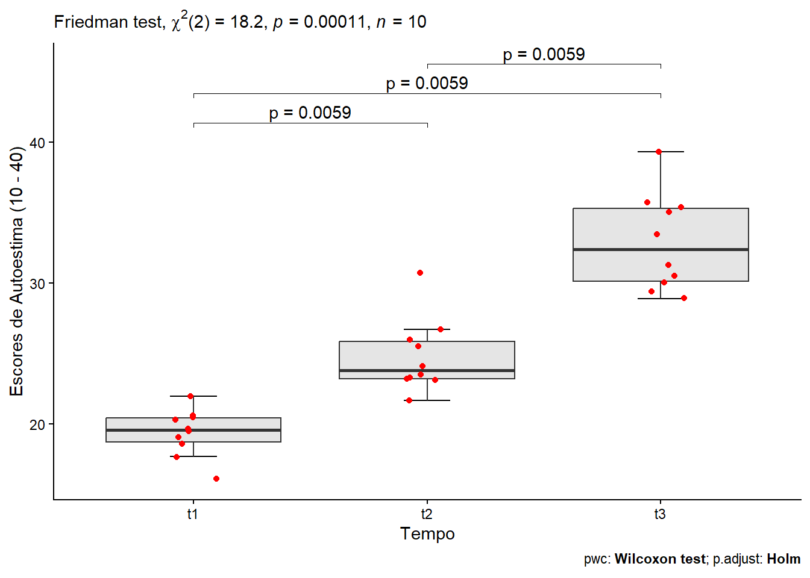

pacman::p_load (coin,
flextable,
ggpubr,
ggsci,
officer,
readxl,
rstatix,
tidyverse)20 Métodos não paramétricos
20.1 Pacotes necessários neste capítulo
20.2 Distribuição livre
A maioria dos testes estatísticos, discutidos neste livro, são testes paramétricos. Nestes, o interesse estava focado em estimar ou testar uma hipótese sobre um ou mais parâmetros populacionais e ,por isso, são denominados de paramétricos. Além disso, o aspecto central desses procedimentos era o conhecimento da forma funcional da população da qual foram retiradas as amostras que forneceram a base para a inferência. Por exemplo, o teste t de Student para amostras independentes e a ANOVA são baseados no pressuposto de que os dados foram amostrados de populações que têm distribuição normal.
Os testes não paramétricos não fazem suposições em relação à distribuição da população. Não têm, portanto, os pressupostos restritivos, comuns nos testes paramétricos. Têm distribuição livre. São baseados em uma ideia simples de ordenação por postos, do valor mais baixo ao mais alto. Analisam somente os postos, ignorando os valores. Podem ser usados tanto com variáveis ordinais como quantitativas numéricas.
20.3 Postos
Os métodos estatísticos não paramétricos não lidam diretamente com os valores observados. Em função disso, para poder usar a informação fornecida pelas observações, sem trabalhar diretamente com os valores observados, utiliza-se os postos das observações. Posto (rank) de uma observação é a sua posição em relação aos demais valores.
A atribuição dos postos de uma variável é realizada da seguinte maneira:
- Colocam-se as observações em ordem crescente;
- Associam-se valores, correspondendo às suas posições relativas na amostra. O primeiro elemento recebe o valor 1, o segundo o valor 2 e, assim por diante, até que a maior observação receba o valor n;
- Se todas as observações são distintas, os postos são iguais aos valores associados às observações no passo anterior.
- Para observações iguais (empates), associam-se postos iguais à média das suas posições relativas na amostra.
Por exemplo, suponha uma amostra contendo os escores de Apgar no primeiro minuto de 10 recém-nascidos a termo (Tabela 20.1). Em primeiro lugar, os valores são colocados em ordem crescente e, após, atribui-se postos aos valores. Observe que os postos atribuídos aos valores das posições 4, 5 e 6 são iguais e correspondentes a média de 4, 5 e 6, que é igual a 5. O mesmo ocorreu com os outros valores onde houve empate. A soma dos postos, no exemplo, é igual a 55. Para verificar a correção do cálculo, haja ou não empates, a soma dos postos será sempre \(\frac {n\ \times \ (n+1)}{2}\). No exemplo, n = 10, logo \(\frac {10\ \times \ (10+1)}{2}=55\).
apgar1 | ordem | posto |
|---|---|---|
4 | 1 | 1.0 |
5 | 2 | 2.0 |
7 | 3 | 3.0 |
8 | 4 | 5.0 |
8 | 5 | 5.0 |
8 | 6 | 5.0 |
9 | 7 | 8.0 |
9 | 8 | 8.0 |
10 | 9 | 9.5 |
10 | 10 | 9.5 |
20.4 Teste de Mann-Whitney
O teste de Mann-Whitney é usado para analisar a diferença na variável dependente (desfecho) para dois grupos independentes. O teste classifica todos os valores dependentes, ou seja, o valor mais baixo obtém o posto um e, em seguida, usa a soma dos postos de cada grupo no cálculo da estatística de teste.
É o substituto do teste t para amostras independentes quando os pressupostos deste teste são violados. Para a aplicação do teste de Mann-Whitney a variável de interesse deve ser ordinal ou numérica. Este teste é equivalente ao desenvolvido por Frank Wilcoxon (1892 – 1965), assim algumas vezes é denominado de Wilcoxon Rank Sum Test ou teste de Wilcoxon-Mann-Whitney (1). O R usa esta denominação e é importante não confundir com o teste não paramétrico para amostra pareadas, discutido mais adiante.
20.4.1 Dados usados no exemplo
Os dados do exemplo são do arquivo dadosCirurgia.xlsx, já usado na Seção Seção 19.2.5.1. Ele contém 144 recém-nascidos que foram submetidos a diferentes procedimentos cirúrgicos. A questão de pesquisa a ser respondida é:
Existe diferença no tempo de hospitalização (
tempohosp) dos recém-nascidos de acordo com a presença ou não de infecção (infec)?
Essa pergunta foi respondida de outra maneira, na Seção Seção 19.2.5. Agora, será respondida pelo teste de Mann-Whitney.
20.4.1.1 Leitura, exploração e visualização dos dados
Os dados serão lidos com a função read_excel() do pacote readxl:
cirurgia <- readxl::read_excel ("dados/dadosCirurgia.xlsx")
str(cirurgia)tibble [144 × 7] (S3: tbl_df/tbl/data.frame)
$ id : num [1:144] 1 2 3 4 5 6 7 8 9 10 ...
$ sexo : chr [1:144] "masc" "masc" "masc" "masc" ...
$ peso : num [1:144] 2020 1850 2540 1150 2900 ...
$ ig : num [1:144] 36 30 38 31 36 37 38 39 38 39 ...
$ tempohosp: num [1:144] 37 37 37 46 37 36 30 18 25 14 ...
$ infec : chr [1:144] "não" "não" "sim" "sim" ...
$ cirurgia : chr [1:144] "abdominal" "abdominal" "abdominal" "outra" ...A variável infec aparece como caractere e será transformada como fator:
cirurgia$infec <- factor(cirurgia$infec, levels = c("sim", "não"))Os boxplots (Figura 20.1), construídos com a função ggboxplot() do pacote ggpubr com as cores da paleta do New England Journal of Medicine (NEJM), são uma boa maneira de visualizar os dados:
ggpubr::ggboxplot(cirurgia,
x = "infec",
y = "tempohosp",
bxp.errorbar = TRUE,
bxp.errorbar.width = 0.1,
fill = "infec",
palette = "nejm",
legend = "none",
ggtheme = theme_bw(),
xlab = "Presença de infecção" ,
ylab = "Tempo de hospitalização (dias)") 
Os boxplots exibem uma série de valores atípicos, indicando que existe uma assimetria em ambos os grupos. Essa assimetria também pode ser verificada usando o teste de Shapiro-Wilk, que mostrando valores p < 0,05, confirma que os dados não seguem a distribuição normal. Este teste não é pré-requisito para o teste. Foi realizado como uma demonstração.
cirurgia |>
dplyr::group_by(infec) |>
rstatix::shapiro_test(tempohosp)# A tibble: 2 × 4
infec variable statistic p
<fct> <chr> <dbl> <dbl>
1 sim tempohosp 0.692 1.47e- 9
2 não tempohosp 0.565 9.87e-1520.4.1.2 Sumarização dos dados
Como a variável tempohosp é assimétrica conforme mostrado acima, onde ambos os valores p são menores do que 0,05, será realizado um sumário numérico com a obtenção da mediana e IIQ. Isto será feito através da função group_by() e summarise(), incluídas no pacote dplyr.
res <- cirurgia |>
dplyr::group_by(infec) |>
dplyr::summarise(n = n(),
mediana = median (tempohosp, na.rm = TRUE),
p25=quantile(tempohosp, probs = 0.25, na.rm = TRUE),
p75=quantile(tempohosp, probs = 0.75, na.rm = TRUE))
res# A tibble: 2 × 5
infec n mediana p25 p75
<fct> <int> <dbl> <dbl> <dbl>
1 sim 56 37 22.8 49
2 não 88 23 18 37Os dados mostram que a mediana de tempo de internação dos neonatos infectados é bem maior do que a mediana dos não infectados.
20.4.2 Hipóteses estatísticas
Da mesma maneira que o teste t, as hipóteses estabelecidas comparam dois grupos independentes. Se não houver diferença entre os grupos, ou seja, os grupos são provenientes de populações com distribuições iguais, as somas dos postos em cada grupo devem ficar próximas. Desta forma,
\(H_{0}\): As duas populações têm distribuições iguais.
\(H_{1}\): As duas populações não têm distribuições iguais.
Não foi escrita a hipótese nula como sendo que as médias (ou as medianas) são iguais, pois o teste não usa as medidas de posição tradicionais e sim os postos.
20.4.3 Pressupostos do teste de Mann-Whitney
O teste de Mann-Whitney é baseado nos seguintes pressupostos:
- Os dados são aleatórios;
- As amostras são de dois grupos independentes;
- Um dos grupos é denominado de 1 e o outro de 2;
- A variável a ser comparada nos grupos deve ser ordenável;
- O grupo 1 será o grupo de menor tamanho e, se tiverem o mesmo tamanho, o grupo 1 é aquele cuja soma dos postos é a menor.
20.4.4 Cálculo da estatística de teste
20.4.4.1 Lógica do teste U de Mann-Whitney
De acordo com as hipóteses estabelecidas, o teste é bicaudal. Se as observações nos dois grupos forem provenientes da mesma população, a soma dos postos em cada grupo devem ficar próximas.
Para calcular o teste, procede-se da seguinte maneira:
Deve haver uma variável que identifique o grupo a que pertence cada uma das observações. No exemplo proposto, a variável desfecho é
tempohospe a variável agrupadora éinfec, categorizada comosimenão.Ordenar de forma crescente todos os valores da variável
tempohosp, sem levar em consideração a que grupo pertence. Para realizar este procedimento, será usada a funçãorank()do R base com o método para empates igual à média dos valores empatados (ties.method="average). Ao executar a função, será criada uma nova variável, denotadapostos.
cirurgia$postos <- rank(cirurgia$tempohosp, ties.method = "average")
head(cirurgia)# A tibble: 6 × 8
id sexo peso ig tempohosp infec cirurgia postos
<dbl> <chr> <dbl> <dbl> <dbl> <fct> <chr> <dbl>
1 1 masc 2020 36 37 não abdominal 94.5
2 2 masc 1850 30 37 não abdominal 94.5
3 3 masc 2540 38 37 sim abdominal 94.5
4 4 masc 1150 31 46 sim outra 120
5 5 masc 2900 36 37 não abdominal 94.5
6 6 fem 2480 37 36 sim abdominal 91 - Verificar o tamanho (n) de cada grupo (presença ou não de infecção) e somar os postos em cada um dos grupos, usando a função
group_by()junto com a funçãosummarise(),
resumo <- cirurgia |>
dplyr::group_by(infec) |>
dplyr::summarise(soma = sum(postos))
resumo# A tibble: 2 × 2
infec soma
<fct> <dbl>
1 sim 4876.
2 não 5564.- Denominar de grupo_1 o grupo com menor soma:
grupo_1 <- min(resumo$soma)
grupo_1[1] 4875.5- Denotar o grupo_1 como T
T <- grupo_1Consequentemente,
n1 <- res$n[1]
n1[1] 56n2 <- res$n[2]
n2[1] 88- Calcular a estatística do teste, usando a fórmula preconizada por Altman (2):
\[U =n_{1} \times n_{2} \ +\left [\frac{n_{1} \times \left (n_{1} + 1 \right )}{2} \right ] - T\]
U <- (n1*n2 + ((n1*(n1 + 1))/2)) - T
U[1] 1648.5Obs.: O U de Mann-Whitney aparece no teste de Wilcoxon como W, eles representam o mesmo.
- Se \(n_{1}\), \(n_{2}\) \(\ge\) 10, a distribuição da estatística do teste pode ser aproximada por uma distribuição normal com média igual a
\[\mu_{U} =\left [\frac{n_{S} \times \left (n_{S} + n_{L} + 1 \right )}{2} \right ]\]
onde \(n_{S}\) e \(n_{L}\), são, respectivamente, o grupo de menor e maior tamanho. No exemplo, \(n_{1}\) e \(n_{2}\).
m_U <- (n1*(n1+n2+1))/2
m_U[1] 4060E desvio padrão igual a
\[\sigma_{U}= \sqrt {\frac{n_{1}\times n_{2} \times (n_{1}+n_{2}+1)}{12}}\]
dp_U <- sqrt((n2*m_U)/6)
dp_U[1] 244.0219Os resultados fornecem os dados para calcular a estatística \(Z_{U}\) com correção de continuidade e, a partir dela, calcular o valor P.
\[Z_{U}= \frac{(T -0,5) - \mu_{U}}{\sigma_{U}}\]
Z_U <- ((T - 0.5) - m_U)/dp_U
round(Z_U, 2)[1] 3.34- Finalmente, calcula-se o valor p, usando a função
pnorm(), multiplicada por 2, pois o teste é bicaudal.
valor_p <- pnorm(Z_U, lower.tail = FALSE) * 2
round(valor_p, 4)[1] 8e-04Na prática, não há necessidade de fazer todos esses cálculos, pois o R calcula facilmente o teste. Os cálculos foram mostrados para melhorar o entendimento de como o teste de Mann-Whitney funciona.
20.4.4.2 Cálculo do teste de Mann-Whitney no R
O teste pode ser realizado com a função wilcox_test() 1 do pacote rstatix:
1 O cálculo pode também ser realizado, usando a função wilcox.test() do pacote stats, incluído no R base.
teste <- rstatix::wilcox_test(formula = tempohosp ~ infec, data = cirurgia)
teste# A tibble: 1 × 7
.y. group1 group2 n1 n2 statistic p
* <chr> <chr> <chr> <int> <int> <dbl> <dbl>
1 tempohosp sim não 56 88 3280. 0.000830O valor p < 0,001 confirma a diferença estatisticamente significativa, em concordância com o cálculo manual. No entanto, a estatística W reportada pelo R difere do U calculado manualmente. Isso ocorre por dois motivos:
Grupos de referência diferentes: o cálculo manual segue a convenção de Altman e usa como referência o grupo com a menor soma de postos (aqui, o grupo “não infectado”); o
wilcox_test()calcula W para o primeiro nível do factor (infec = "sim"), independentemente de qual grupo tem a menor soma de postos.Estatísticas complementares: U (manual) e W (R) referem-se a grupos opostos e satisfazem a relação \(W + U = n_1 \times n_2\). Somados, devem totalizar o produto dos tamanhos dos dois grupos.
teste$statistic + U == n1 * n2W TRUE
O valor p é idêntico nos dois casos — a conclusão não muda.
20.4.5 Tamanho do efeito
É interessante calcular o tamanho do efeito, a magnitude do efeito. O tamanho do efeito r é calculado como a estatística \(Z_{U}\) dividida pela raiz quadrada do tamanho da amostra (\(n = n_{1} + n_{2}\)).
\[r = \frac {Z_{U}}{\sqrt{n}}\]
r <- Z_U/sqrt(n1+n2)
round(r,3)[1] 0.278O R possui a função wilcox_effsize() incluída no pacote rstatix. Necessita também do pacote coin (3) instalado para calcular a estatística r.2 A saída exibirá junto a magnitude o efeito, que no caso é pequena (veja Tabela 20.2).
2 Para maiores detalhes consulte a ajuda da função.
wilcox_effsize(cirurgia, tempohosp~infec)# A tibble: 1 × 7
.y. group1 group2 effsize n1 n2 magnitude
* <chr> <chr> <chr> <dbl> <int> <int> <ord>
1 tempohosp sim não 0.279 56 88 small r | magnitude |
|---|---|
0,10 < 0,30 | pequeno |
0,30 < 0,50 | médio |
>= 0,50 | grande |
Sem considerar o sinal | |
20.4.6 Conclusão
O valor \(p < 0,0001\) está bem abaixo do nível de significância estabelecido (\(\alpha = 0,05)\). Pode-se concluir que o tempo de hospitalização nos dois grupos é estatisticamente diferente. Entretanto, a magnitude dessa diferença é pequena.
Isto pode ser visualizado no gráfico (Figura 20.2):
cirurgia |>
ggplot2::ggplot( aes(x=infec, y=tempohosp, fill = infec)) +
geom_errorbar(stat = "boxplot", width = 0.1) +
geom_boxplot() +
scale_fill_bmj() +
labs(
subtitle = rstatix::get_test_label(teste, detailed = TRUE),
x ="Presença de infecção",
y="Tempo de hospitalização (dias)") +
theme_bw() +
theme(legend.position = "none")
20.5 Teste de Wilcoxon para amostras pareadas
O teste de Wilcoxon, também conhecido como teste dos postos com sinais de Wilcoxon (Wilcoxon Signed-Rank Test), é um teste não paramétrico utilizado em situações em que existem dois conjuntos de dados emparelhados, ou seja, dados provenientes do mesmo participante. O teste não examina os dois grupos individualmente; em vez disso, ele se concentra na diferença existente entre cada par de observações. É um equivalente não paramétrico do teste t pareado (4).
20.5.1 Dados usados como exemplo
Cenário
Para verificar se a realização de exercícios aeróbicos modifica a função respiratória de 10 escolares asmáticos, foi medido o Pico de Fluxo Expiratório Máximo (Peak Flow Meter) no início e no final do programa, após 120 dias. O Pico de Fluxo Expiratório Máximo (PFE), medido em L/min, serve como uma forma simples de avaliar a força e a velocidade de saída do ar de dentro dos pulmões.
Os dados têm apenas três variáveis, id(identificação), basal (PFE basal) e final(PFE final).
id <- c(1:10)
basal <- c(120, 200, 140, 200, 110, 240, 150, 120, 250, 190)
final <- c(220, 300, 230, 180, 300, 330, 230, 250, 300, 200)
dados <- tibble(id, basal, final)
str (dados)tibble [10 × 3] (S3: tbl_df/tbl/data.frame)
$ id : int [1:10] 1 2 3 4 5 6 7 8 9 10
$ basal: num [1:10] 120 200 140 200 110 240 150 120 250 190
$ final: num [1:10] 220 300 230 180 300 330 230 250 300 200A questão de pesquisa a ser respondida, portanto, é:
Existe diferença entre as medidas iniciais e finais do PFE dos escolares asmáticos que entraram em um programa de exercícios aeróbicos?
20.5.1.1 Exploração e transformação dos dados
Os dados estão no formato amplo com as variáveis basal e final classificadas como númericas. Serão transformados para o formato longo, usando a função pivot_longer() do pacote tidyr. Este processo é opcional, mas, como foi feito com o teste t pareado, será repetido aqui, por questões didáticas:
dadosL <- dados |>
tidyr::pivot_longer(c(basal, final),
names_to = "momento",
values_to = "medidas")
str(dadosL)tibble [20 × 3] (S3: tbl_df/tbl/data.frame)
$ id : int [1:20] 1 1 2 2 3 3 4 4 5 5 ...
$ momento: chr [1:20] "basal" "final" "basal" "final" ...
$ medidas: num [1:20] 120 220 200 300 140 230 200 180 110 300 ...20.5.1.2 Medidas resumidoras
Como o número de participantes é de apenas 10, a medida de posição mais adequada para resumir os dados é mediana e a medida de dispersão é o intervalo interquartil (IIQ). Para isso, se fará uso das funções group_by() e summarise() do pacote dplyr:
resumo <- dadosL |>
dplyr::group_by(momento) |>
dplyr::summarise(n = n(),
mediana = median (medidas, na.rm = TRUE),
p25=quantile(medidas, probs = 0.25, na.rm = TRUE),
p75=quantile(medidas, probs = 0.75, na.rm = TRUE),
media = mean (medidas, na.rm = TRUE),
dp = sd (medidas, na.rm = TRUE),
ep = dp/sqrt(n),
me = ep * qt(1 - (0.05/2), n - 1))
resumo# A tibble: 2 × 9
momento n mediana p25 p75 media dp ep me
<chr> <int> <dbl> <dbl> <dbl> <dbl> <dbl> <dbl> <dbl>
1 basal 10 170 125 200 172 50.9 16.1 36.4
2 final 10 240 222. 300 254 50.4 15.9 36.020.5.1.3 Visualização dos dados
Pode-se fazer visualização gráfica dos dados usando um boxplot (Figura 20.3) ou um gráfico de linha (Figura 20.4).
20.5.1.3.1 Boxplot
ggpubr::ggboxplot(dadosL,
x = "momento",
y = "medidas",
bxp.errorbar = TRUE,
bxp.errorbar.width = 0.1,
fill = "momento",
palette = c("cyan4", "cyan3"),
legend = "none",
ggtheme = theme_bw(),
xlab = "Momento" ,
ylab = "PEF (L/min) ")+
theme (text = element_text (size = 13),
axis.text.x= element_text(size = 12)) 
20.5.1.3.2 Gráfico de linha
ggpubr::ggline(dadosL,
x = "momento",
y = "medidas",
color = "cyan4",
linetype = "dashed",
size = 0.7,
add = "mean_ci",
point.size = 2,
xlab = "Momento" ,
ylab = "PEF (L/min) ",
ggtheme = theme_bw()) +
theme (text = element_text (size = 13),
axis.text.x= element_text(size = 12))
20.5.1.4 Criação de uma variável que represente a diferença entre os momentos
A diferença entre as médias basal e final será atribuída ao nome D. Esta ação será realizada, utilizando o banco de dados amplo (dados):
dados$D <- dados$basal - dados$final
head (dados)# A tibble: 6 × 4
id basal final D
<int> <dbl> <dbl> <dbl>
1 1 120 220 -100
2 2 200 300 -100
3 3 140 230 -90
4 4 200 180 20
5 5 110 300 -190
6 6 240 330 -90Resumo da variável D
Ao resumo será atribuído ao nome resumo2:
resumo2 <- dados |>
dplyr::summarise(n = n (),
mediana = median (D, na.rm = TRUE),
p25=quantile(D, probs = 0.25, na.rm = TRUE),
p75=quantile(D, probs = 0.75, na.rm = TRUE))
resumo2# A tibble: 1 × 4
n mediana p25 p75
<int> <dbl> <dbl> <dbl>
1 10 -90 -100 -57.5O sinal negativo demonstra que houve um aumento do PFE do momento basal para o final.
20.5.2 Definição das hipóteses estatísticas
Da mesma maneira que o teste t pareado, as hipóteses estabelecidas comparam dois grupos dependentes. O teste de Wilcoxon é usado para avaliar a hipótese nula de que a distribuição das diferenças entre os grupos tem uma diferença mediana igual a 0.
\(H_{0}: A \ mediana \ da \ (D_{i}) = 0\)
\(H_{A}: A \ mediana \ da \ (D_{i}) \ne 0\)
Note que a \(H_{A}\) estabelece que a diferença pode aumentar ou diminuir. Logo, o teste é bicaudal.
20.5.3 Execução do teste estatístico
20.5.3.1 Lógica do teste de Wilcoxon
- A ideia do teste é verificar se as diferenças positivas são maiores ou menores, em grandeza absoluta, que as diferenças negativas. Para isso, foi criada, anteriormente, a variável
D. Agora, será criada outra variável, igual à variávelD, apenas ignorando o sinal, denominadaD_abs, diferença absoluta entre as variáveisfinalebasal.
dados$D_abs <- abs(dados$basal - dados$final)- Excluir os casos com diferença igual a 0 (zero). Para isso, uma maneira possível é extrair um subconjunto de dados do conjunto principal (
dados), criando um conjunto de dados com a funçãofilter()do pacotedplyr, que receberá o nome dedados1. O argumentoD_abs != 0significa todas as diferenças absolutas diferentes de 0:
dados1 <- dados |> dplyr::filter(D_abs != 0)Observe que como não há diferenças zeradas. Ou seja, o novo conjunto de dados continua o mesmo. O que pode ser confirmado, executando a função str():
str (dados1)tibble [10 × 5] (S3: tbl_df/tbl/data.frame)
$ id : int [1:10] 1 2 3 4 5 6 7 8 9 10
$ basal: num [1:10] 120 200 140 200 110 240 150 120 250 190
$ final: num [1:10] 220 300 230 180 300 330 230 250 300 200
$ D : num [1:10] -100 -100 -90 20 -190 -90 -80 -130 -50 -10
$ D_abs: num [1:10] 100 100 90 20 190 90 80 130 50 10- Ordenar de forma crescente todos os valores da variável
D_absdo banco de dadosdados1, usando a funçãoarrange()do pacotedplyr:
dados1 <- dados1 |> dplyr::arrange(dados1$D_abs)- Estabelecer postos para os valores ordenados da variável
D_abs, do conjunto de dadosdados1, fazendo a média das ordens quando houver empate. A execução deste comando cria uma nova variável, chamadapostos:
dados1$postos <- rank(dados1$D_abs)- Estabelecer sinais para os postos, criando dois subconjuntos de dados do conjuntos dados1, um com os escolares com postos positivos (
pos) e outros com postos negativos(neg):
neg <- dados1 |> dplyr::filter(D < 0)
pos <- dados1 |> dplyr::filter(D > 0)- Somar todos os postos (variável
posto) em cada um dos subconjuntos criados (negepos):
soma_neg <- sum(neg$postos)
soma_pos <- sum(pos$postos)
print (c(soma_neg, soma_pos))[1] 53 2- Atribuir a menor soma à estatística do teste, denotada T:
T <- min (soma_neg : soma_pos)
T[1] 2- Para dados com tamanhos grandes (> 20 pares), a significância de T pode ser determinada (5), considerando que a distribuição de T tem aproximadamente distribuição normal com média igual a
\[\mu_{T} =\frac{n \times \left (n + 1 \right )}{4}\]
onde n é o tamanho da amostra.
n <- length(dados$D)
mu_T <- (n * (n + 1))/4
mu_T[1] 27.5E desvio padrão igual a:
\[\sigma_{T}= \sqrt {\frac{n\left (n + 1 \right )\times \left (2n + 1 \right )}{24}}\]
dp_T <- sqrt ((n*(n + 1)) * (2 * n + 1) /24)
dp_T[1] 9.810708Os resultados da execução das equações fornecem os dados para calcular a estatística Z_T com correção de continuidade e, a partir dela, calcular o valor p.
\[Z_{T}= \frac{\left |T - \mu_{T} \right | - 0,5}{\sigma_{T}}\]
Z_T <- (abs(T - mu_T)- 0.5)/dp_T
Z_T[1] 2.548236Concluindo, o valor da estatística de teste T é superior ao \(Z_{crítico} = 1,96\), para um \(\alpha = 0,05\). Dessa forma, a \(H_{0}\) é rejeitada. Existe uma diferença significativa entre o PFE basal e o PFE final, neste grupo de escolares asmáticos.
O valor p pode ser obtido com a função
pnorm()e multiplicando o resultado por 2, pois o teste é bilateral.
valor_p <- pnorm (Z_T, lower.tail = FALSE) * 2
valor_p[1] 0.01082692Como já dito anteriormente, na prática, não há necessidade de fazer todos esses cálculos, pois o R calcula facilmente o teste. Eles são apenas uma demonstração de como o teste funciona.
20.5.3.2 Cálculo do teste de Wilcoxon no R
Usando o conjunto de dados no formato longo (dadosL), calcula-se o teste com a função wilcox_test() do pacote rstatix. É a mesma função utilizada para o teste de U de Mann-Whitney, mudando apenas o argumento paired=FALSE para paired=TRUE:
teste1 <- dadosL |>
rstatix::wilcox_test(medidas ~ momento, paired = TRUE) |>
rstatix::add_significance()
teste1# A tibble: 1 × 8
.y. group1 group2 n1 n2 statistic p p.signif
<chr> <chr> <chr> <int> <int> <dbl> <dbl> <chr>
1 medidas basal final 10 10 2 0.00586 ** Observe que o resultado é o mesmo calculado manualmente.
20.5.4 Tamanho do efeito
O tamanho do efeito pode ser calculado da mesma forma que para o teste de Mann-Whitney (Seção 20.4.5), usando a mesma equação e os dados obtidos acima, onde 2.548 e n = 10 tem-se
\[r = \frac {Z_{T}}{\sqrt{n}}\]
Pode-se usar também a função wilcox_effsize() para calcular a estatística r. A Saída exibe junto a magnitude o efeito, que no caso é grande (> 0,5 como mostra a Tabela 20.2 do teste de Mann-Whitney).
dadosL |>
wilcox_effsize(medidas ~ momento, paired = TRUE)# A tibble: 1 × 7
.y. group1 group2 effsize n1 n2 magnitude
* <chr> <chr> <chr> <dbl> <int> <int> <ord>
1 medidas basal final 0.823 10 10 large 20.5.5 Conclusão
Assumindo um \(\alpha = 0,05\), se o valor p, obtido pelo teste, for menor do que 0,05, rejeita-se a hipótese nula (V = 2, p = 0,01, n = 10).
Pode-se concluir que existe diferença nas medidas do pico de fluxo expiratório máximo no início e no fim do programa de exercícios aeróbicos realizados pelos escolares asmáticos e a magnitude do efeito foi grande (r = 0,82).
Isto pode ser visualizado na Figura 20.5:
bxp <- ggpubr::ggboxplot(dadosL,
x = "momento",
y = "medidas",
bxp.errorbar = TRUE,
bxp.errorbar.width = 0.1,
fill = "momento",
palette = c("cyan4", "cyan3"),
legend = "none",
ggtheme = theme_bw(),
xlab = "Momento" ,
ylab = "PEF (L/min) ") +
theme (text = element_text (size = 13),
axis.text.x = element_text(size = 11))
teste <- dadosL |>
rstatix::wilcox_test (medidas ~ momento, paired = TRUE) |>
rstatix::add_significance ()
teste <- teste |> rstatix::add_xy_position ()
bxp +
stat_pvalue_manual (teste,
tip.length = 0) +
labs (subtitle = get_test_label (stat.test = teste,
detailed = TRUE))
20.6 Teste de Kruskal-Wallis
Quando os pressupostos subjacentes à ANOVA não são atendidos, é possível usar o teste não paramétrico de Kruskal-Wallis (KW) para testar a hipótese de que os parâmetros de localização são iguais (6). Pode ser considerado uma extensão do teste de Wilcoxon-Mann-Whitney.
Enquanto a ANOVA depende da hipótese de que todas as populações são independentes e com resíduos normalmente distribuídos, o teste de Kruskal-Wallis exige apenas amostras aleatórias independentes provenientes de suas respectivas populações. Entretanto, este teste somente deve ser aplicado se a amostra for pequena e/ou os pressupostos para a ANOVA forem seriamente violados.
O teste não usa diretamente medições de quantidade conhecida, utiliza, como outros testes não paramétricos, os postos dos valores analisados. Em função disso, é também conhecido como análise de variância de um fator em postos.
20.6.1 Dados usados no exemplo
Cenário
Um experimento foi realizado para verificar se o álcool ou o café afetam os tempos de reação ao dirigir (7). O estudo tem três grupos diferentes de participantes: 10 bebendo água (controle), 10 bebendo cerveja contendo duas unidades de álcool3 e 10 bebendo café. O tempo de reação em uma simulação de direção foi medido para cada participante.
3 Para calcular as unidades de álcool, multiplique o volume da bebida (em mililitros) pelo teor alcoólico (ABV, do inglês Alcohol by Volume) e divida o resultado por 1000.
Os dados encontram-se no arquivo dadosResposta.xlsx. Clique aqui para baixar e, após, salve o mesmo no seu diretório de trabalho.
As variáveis são:
- id \(\to\) identificação do participante;
- tempo \(\to\) tempo de reação na simulação de direção em segundos;
- bebida \(\to\) três grupo: água, álcool e café.
O estudo pretende verificar se existe diferença no tempo de reação dos participantes em um teste de direção com a ingesta de água, café e álcool.
20.6.1.1 Leitura e exploração dos dados
Como o dados estão contidos em um arquivo Excel (.xlsx), serão lidos com a função read_excel() do pacote readxl e a sua estrutura será observada com função str():
dados <- read_excel ("dados/dadosResposta.xlsx")
str(dados)tibble [30 × 3] (S3: tbl_df/tbl/data.frame)
$ id : num [1:30] 1 2 3 4 5 6 7 8 9 10 ...
$ tempo : num [1:30] 0.37 0.38 0.61 0.78 0.83 0.86 0.9 0.95 1.63 1.97 ...
$ bebida: chr [1:30] "agua" "agua" "agua" "agua" ...O formato do arquivo é o longo. A variável bebida encontra-se como caracter e deve ser transformada em fator e as categorias na sequência: agua, cafe e alcool.
dados$bebida <- factor(dados$bebida,
levels = c("agua", "cafe", "alcool"))Os dados serão observados visualmente através de boxplots (Figura 20.6), usando a função ggplot() do pacote ggplot2, com cores do nejm (New England Journal of Medicine) o pacote ggsci.
ggpubr::ggboxplot(dados,
x = "bebida",
y = "tempo",
bxp.errorbar = T,
bxp.errorbar.width = 0.1,
fill = "bebida",
palette = "nejm",
legend = "none",
ggtheme = theme_bw(),
xlab = "Tipo de bebida" ,
ylab = "Tempo de reação (seg)") +
theme(text = element_text(size = 12))
Os boxplots exibem dados com medianas visualmente diferentes, bigodes diferentes e grupos com presença de outliers. Para verificar o impacto desses achados, pode-se usar a função identify_outliers(), do pacote rstatix que confirma, na sua Saída, a presença de outliers no grupo agua e cafe, sendo dois extremos.
dados |>
dplyr::group_by(bebida) |>
rstatix::identify_outliers(tempo)# A tibble: 4 × 5
bebida id tempo is.outlier is.extreme
<fct> <dbl> <dbl> <lgl> <lgl>
1 agua 9 1.63 TRUE FALSE
2 agua 10 1.97 TRUE TRUE
3 cafe 19 2.56 TRUE FALSE
4 cafe 20 3.07 TRUE TRUE Para avaliar a normalidade será usado o teste de Shapiro-Wilk, com a função shapiro_test() e a função group_by() do pacote dplyr:
dados |>
dplyr::group_by (bebida) |>
rstatix::shapiro_test (tempo) # A tibble: 3 × 4
bebida variable statistic p
<fct> <chr> <dbl> <dbl>
1 agua tempo 0.863 0.0837
2 cafe tempo 0.815 0.0220
3 alcool tempo 0.875 0.114 A variável cafe tem uma distribuição que não se ajusta à distribuição normal.
Para completar a exploração dos dados, será solicitado, usando as funções group_by () e summarise, do pacote dplyr, medidas de localização e dispersão adquadas para variáveis bem assimétricas.
resumo <- dados |>
dplyr::group_by(bebida) |>
dplyr::summarise(n = n(),
mediana = median (tempo, na.rm = TRUE),
p25=quantile(tempo, probs = 0.25, na.rm = TRUE),
p75=quantile(tempo, probs = 0.75, na.rm = TRUE))
resumo# A tibble: 3 × 5
bebida n mediana p25 p75
<fct> <int> <dbl> <dbl> <dbl>
1 agua 10 0.845 0.653 0.937
2 cafe 10 1.44 1.28 1.68
3 alcool 10 2.25 1.77 2.85 20.6.2 Hipóteses estatísticas
No contexto da comparação de três ou mais grupos independentes, o teste de Kruskal‑Wallis é empregado para verificar se há diferenças estatisticamente significativas entre as distribuições populacionais dos grupos analisados. As hipóteses são definidas da seguinte forma:
\(H_{0} (Hipótese \ nula)\): Os grupos são provenientes de uma mesma população, isto é, não há diferença entre as distribuições dos grupos.
\(H_{1}(Hipótese \ alternativa)\): Pelo menos um dos grupos é proveniente de uma população diferente, indicando que existe diferença entre as distribuições de pelo menos um dos grupos em relação aos demais.
20.6.3 Pressupostos do teste
O teste de Kruskal-Wallis pressupõe as seguintes condições para o seu adequado uso:
- As amostras são amostras aleatórias independentes de suas respectivas populações;
- A escala de medição utilizada é pelo menos ordinal e, se houver apenas três grupos, deve haver pelo menos 5 casos em cada grupo;
- As distribuições dos valores nas populações amostradas são idênticas, exceto pela possibilidade de que uma ou mais das populações sejam compostas por valores que tendem a ser maiores do que os das outras populações.
20.6.4 Execução do teste estatístico
20.6.4.1 Lógica do teste de Kruskal-Wallis
A teoria do teste Kruskal-Wallis é semelhante à do teste de Mann-Whitney, ou seja, tem como base a soma dos postos. Em primeiro lugar, os escores são ordenados do menor para o maior, independentemente do grupo que pertençam.
O menor recebe o posto 1 e assim por diante. Após a atribuição dos postos, soma-se os postos por grupo. A soma dos postos de cada grupo é representada por \(R_{1}\), \(R_{2}\), \(R_{3}\), …, \(R_{i}\). A estatística do teste, H, é calculada com a equação (8):
\[H =\frac {12}{N \times \left (N + 1 \right )} \sum_{i=1}^{k} \frac {R_{i}^{2}}{n_{{i}}}-3 \times\left (N + 1\right)\]
onde \(n_{i}\) é o número de observações no grupo i, \(N = \sum_{i=1}^{k}\times n_{i}\) (o número total de observações em todos os k grupos) e \(R_{i}\) é a soma dos postos das \(n_{i}\) observações no grupo i.
Uma boa verificação (mas não uma garantia) de que os postos foram atribuídos corretamente é ver se a soma de todos os postos é igual a \(\frac {N \times \left (N + 1\right )}{2}\).
- Criar a variável
postocom os postos ordenados de forma crescente, independente do grupo, como realizado no teste de Mann-Whitney:
dados$posto <- rank(dados$tempo, ties.method = "average")
str(dados)tibble [30 × 4] (S3: tbl_df/tbl/data.frame)
$ id : num [1:30] 1 2 3 4 5 6 7 8 9 10 ...
$ tempo : num [1:30] 0.37 0.38 0.61 0.78 0.83 0.86 0.9 0.95 1.63 1.97 ...
$ bebida: Factor w/ 3 levels "agua","cafe",..: 1 1 1 1 1 1 1 1 1 1 ...
$ posto : num [1:30] 1 2 3 4 5 6 7 8 16 22.5 ...- Somar os postos de cada grupo separadamente:
resumo1 <- dados |>
dplyr::group_by(bebida) |>
dplyr::summarise(n = n(),
soma = sum(posto))
resumo1# A tibble: 3 × 3
bebida n soma
<fct> <int> <dbl>
1 agua 10 74.5
2 cafe 10 157
3 alcool 10 234. - Cálculo da estatística do teste H
N <- 30
n <- 10
R_agua <- resumo1[1,3]
R_alcool <- resumo1[2,3]
R_cafe <- resumo1[3,3]
H <- (12/(N*(N+1))) * ((R_agua^2/n) + (R_alcool^2/n) + (R_cafe^2/n)) - (3*(N+1))
H soma
1 16.31806- Cálculo do Valor p
Se existir três grupos, com cinco ou menos participantes em cada grupo, há necessidade de usar a tabela especial para tamanhos de amostra pequenos (9). Se você tiver mais de cinco participantes por grupo, trate H como qui-quadrado. A estatística H é estatisticamente significativo se for igual ou maior que o valor crítico qui-quadrado para o grau de liberdade específico, igual a \(k - 1\). Aqui, tem-se 10 participantes por grupo e, assumindo um \(\alpha = 0,05\), o \(H_{crítico}\) é igual a:
alpha <- 0.05
k <- 3
gl = k - 1
H_critico <- qchisq(1 - alpha, gl)
H_critico[1] 5.991465Uma vez que o \(H_{calculado} = 16,3\) é maior que \(H_{crítico} = 6,0\) , rejeita-se a \(H_{0}\). O valor P é obtido através da função pchisq():
H <- 16.32
pchisq(H, 2, lower.tail = FALSE)[1] 0.0002858624O R tem funções que fazem facilmente esses cálculos enfadonhos. Eles são colocados aqui apenas para ilustrar o raciocínio de como o teste de Kruskal-Wallis funciona. Sempre existem curiosos lendo o livro!
20.6.4.2 Teste de Kruskal-Wallis no R
No R, pode-se calcular o teste, usando a função kruskal_test() do pacote rstatix, cujos argumentos podem ser consultados na ajuda do RStudio.
teste <- rstatix::kruskal_test (data = dados, formula = tempo ~ bebida)
teste# A tibble: 1 × 6
.y. n statistic df p method
* <chr> <int> <dbl> <int> <dbl> <chr>
1 tempo 30 16.3 2 0.000286 Kruskal-Wallis20.6.5 Tamanho do efeito
O eta quadrado (\(\eta^{2}\)), com base na estatística H, pode ser usado como a medida do tamanho do efeito do teste de Kruskal-Wallis. É calculado pela equação:
\[\eta_{H}^{2} = \frac {\left (H - k + 1 \right)}{\left (N - k\right)}\]
onde H é a estatística obtida no teste de Kruskal-Wallis; k é o número de grupos; N é o número total de observações (10).
A estimativa eta ao quadrado assume valores de 0 a 1 e, multiplicada por 100, indica a porcentagem de variância na variável dependente explicada pela variável independente. Pode ser obtido no R com a função kruskal_effsize() do pacote rstatix:
dados |> kruskal_effsize (tempo~bebida)# A tibble: 1 × 5
.y. n effsize method magnitude
* <chr> <int> <dbl> <chr> <ord>
1 tempo 30 0.530 eta2[H] large Um efeito \(\ge 0,14\) é considerado grande e \(<0,06\) é pequeno (11).
20.6.6 Testes post hoc
A partir do resultado do teste de Kruskal-Wallis, sabe-se que há uma diferença significativa entre os grupos, mas não se sabe quais pares de grupos são diferentes.
Um teste de Kruskal-Wallis significativo é geralmente seguido pelo teste de Dunn (12) para identificar quais grupos são diferentes.
Para realizar as múltiplas comparações, no R, pode ser usada a função dunn_test(), incluído no pacote rstatix. O ajuste de P é feito pelo método de Bonferroni:
pwc <- dados |>
dunn_test (tempo ~ bebida, p.adjust.method = "bonferroni")
pwc# A tibble: 3 × 9
.y. group1 group2 n1 n2 statistic p p.adj p.adj.signif
* <chr> <chr> <chr> <int> <int> <dbl> <dbl> <dbl> <chr>
1 tempo agua cafe 10 10 2.10 0.0361 0.108 ns
2 tempo agua alcool 10 10 4.04 0.0000537 0.000161 ***
3 tempo cafe alcool 10 10 1.94 0.0520 0.156 ns A saída do teste de Dunn, mostra que existe uma diferença estatisticamente significativa apenas entre a água e o álcool, valor p ajustado igual a 1.61^{-4}.
20.6.7 Conclusão
Um teste de Kruskal-Wallis foi realizado para comparar os tempos de reação em uma simulação de direção após beber água, café ou álcool. Houve evidência de uma diferença (p = 0,00029) de pelo menos um par de grupos (Figura 20.7).
O teste de comparações de pares, usando o teste de Dunn, foi realizado para os três pares de grupos. Houve evidencia de diferença entre o grupo que consumiu duas unidades de álcool e o grupo que ingeriu água (p ajustado (Bonferroni) = 0,00016). Entre os demais pares não houve diferença significativa. O tempo mediano de reação para o grupo que recebeu água foi de 0,84 (0,65 – 0,94) segundos, em comparação com 2,25(1,77 – 2,85) segundos no grupo que bebeu cerveja equivalente a duas unidades de álcool, enquanto para o café foi de 1,45(1,28 – 1,69) segundos.
pwc <- pwc |> rstatix::add_xy_position(x= "bebida")
ggpubr::ggboxplot(dados,
x = "bebida",
y = "tempo",
bxp.errorbar = TRUE,
bxp.errorbar.width = 0.1,
fill = "bebida",
palette = "nejm",
legend = "none",
ggtheme = theme_bw())+
ggpubr::stat_pvalue_manual (pwc,
label = "p = {scales::pvalue(p.adj)}",
label.size = 3.2,
hide.ns = FALSE) +
ggplot2::labs(x = "Tipo de bebida",
y = "Tempo de reação (seg)",
subtitle = get_test_label (teste, detailed = TRUE),
caption = get_pwc_label(pwc))
20.7 Teste de Friedman
O teste de Friedman (13) serve para comparar três ou mais tratamentos/condições medidos nas mesmas unidades experimentais (mesmos indivíduos, mesmos objetos), quando osdados são ordinais ou não seguem distribuição normal. Ele é o equivalente não paramétrico da ANOVA de medidas repetidas.
O Teste de Friedman verifica se as distribuições dos tratamentos diferem, analisando postos (ranks) dentro de cada bloco (indivíduo).
20.7.1 Dados usados no exemplo
Cenário
Para avaliar a eficácia de uma dieta para perda de peso, um nutricionista usou um escore de avaliação de autoestima4 em três momentos diferentes em 10 indivíduos diferentes.
4 Escala de Autoestima de Rosenberg (RSES)(14). A RSES é uma medida de autorrelato com dez itens de autoestima global, variando de “discordo totalmente” (1) a “concordo totalmente” (4). O escore total varia de 10 a 40, sendo que quanto maior o escore, maior o nível de autoestima. Escores entre 15 e 25 são considerados médios. Valores abaixo de 15 indicam autoestima baixa e acima de 25, autoestima elevada.
Os dados podem ser obtidos aqui e baixados para o seu diretório de trabalho.
20.7.1.1 Leitura e transformação dos dados
A leitura é feita pela função read_excel() do pacote readxl.
dados <- readxl::read_excel("dados/dadosAutoestima.xlsx")
glimpse(dados)Rows: 10
Columns: 4
$ id <dbl> 1, 2, 3, 4, 5, 6, 7, 8, 9, 10
$ t1 <dbl> 22.0, 17.7, 19.7, 20.3, 18.6, 16.1, 20.6, 19.5, 20.5, 19.1
$ t2 <dbl> 25.5, 30.7, 23.3, 24.1, 21.7, 26.0, 26.7, 23.1, 23.2, 23.5
$ t3 <dbl> 31.3, 28.9, 39.3, 35.0, 29.4, 30.0, 30.5, 33.5, 35.4, 35.7Os dados serão transformados do formato atual wide para o formato long através da função pivot_longer() do pacote tidyr . Junto as variáveis id e tempo serão transformadas em fator:
dadosl <- dados |>
tidyr::pivot_longer(cols = 2:4,
names_to = "tempo",
values_to = "escores")|>
convert_as_factor(id, tempo)
head(dadosl)# A tibble: 6 × 3
id tempo escores
<fct> <fct> <dbl>
1 1 t1 22
2 1 t2 25.5
3 1 t3 31.3
4 2 t1 17.7
5 2 t2 30.7
6 2 t3 28.920.7.1.2 Resumo numérico dos dados
resumo <- dadosl|>
dplyr::group_by(tempo) |>
summarise(
n = n(),
média = mean(escores),
mediana = median(escores),
dp = sd(escores),
mín = min(escores),
máx = max(escores)
)
resumo# A tibble: 3 × 7
tempo n média mediana dp mín máx
<fct> <int> <dbl> <dbl> <dbl> <dbl> <dbl>
1 t1 10 19.4 19.6 1.66 16.1 22
2 t2 10 24.8 23.8 2.58 21.7 30.7
3 t3 10 32.9 32.4 3.41 28.9 39.320.7.1.3 Visualização dos dados
A Figura 20.8 mostra a evolução do escore de autoestima com o tempo:
ggplot(data = dadosl, aes(x = tempo, y = escores)) +
geom_errorbar(
stat = "boxplot",
width = 0.2) +
geom_boxplot(
fill = "grey90",
outliers = FALSE) +
geom_jitter(
width = 0.1,
color = "red") +
labs(
x = "Tempo",
y = "Escores de Autoestima (10 - 40)") +
theme_classic()
Há uma tendência de aumento consistente da autoestima ao longo do tempo. Em T1, todos os indivíduos estão na faixa de autoestima média (16–25), com pouca variabilidade entre eles (DP = 1,66 — o grupo é bastante homogêneo nesse ponto). Em T2, os escores sobem em média ~5,4 pontos e a dispersão aumenta levemente. Em T3, há um salto mais expressivo (~8,1 pontos em relação a T2), com maior variabilidade (DP = 3,41), e a maioria dos indivíduos alcança a faixa alta (> 25).
20.7.2 Hipóteses estatísticas
\(H_{0} (Hipótese \ nula)\): Os grupos são provenientes de uma mesma população, isto é, não há diferença entre as distribuições dos grupos relacionados.
\(H_{1} (Hipótese \ alternativa)\): Pelo menos um dos grupos é proveniente de uma população diferente, indicando que existe diferença entre as distribuições de pelo menos um dos grupos em relação aos demais.
20.7.3 Pressupostos
O Teste de Friedman é robusto e exige pouco, mas ainda tem regras:
- Os dados devem ser organizados em blocos ou pares (relacionados), onde cada unidade experimental deve ser medida em todos os tratamentos. Ou seja, dados pareados;
- Variável dependente ordinal ou contínua;
- Variável independente categórica com mais de duas categorias;
- Observações independentes entre os indivíduos.
20.7.4 Execução do teste
20.7.4.1 Lógica do Teste de Friedman
Os dados do exemplo estão colocados na Tabela 20.3:
id | t1 | t2 | t3 |
|---|---|---|---|
1 | 22.0 | 25.5 | 31.3 |
2 | 17.7 | 30.7 | 28.9 |
3 | 19.7 | 23.3 | 39.3 |
4 | 20.3 | 24.1 | 35.0 |
5 | 18.6 | 21.7 | 29.4 |
6 | 16.1 | 26.0 | 30.0 |
7 | 20.6 | 26.7 | 30.5 |
8 | 19.5 | 23.1 | 33.5 |
9 | 20.5 | 23.2 | 35.4 |
10 | 19.1 | 23.5 | 35.7 |
Como o teste de Friedman é baseado em postos, a primeira ação a ser feita é calcular os postos para cada linha (sujeito), Por exemplo, para o o Sujeito 1 tem-se que 22.0 < 25.5 < 31.3. Assim os postos são 1, 2, 3. Para o Sujeito 2, os valores seguem esta ordem: 17.7 < 28.9 < 30.7 e, portanto, a ordem da linha é 1, 3, 2. No exemplo, não existem empates, mas se houvessem, há necessidade de fazer a média entre eles e estabelecer essa média como o posto de cada valor. Se for seguida essa mesma lógica para os demais sujeitos, tem-se a Tabela 20.4:
id | t1 | t2 | t3 |
|---|---|---|---|
1 | 1 | 2 | 3 |
2 | 1 | 3 | 2 |
3 | 1 | 2 | 3 |
4 | 1 | 2 | 3 |
5 | 1 | 2 | 3 |
6 | 1 | 2 | 3 |
7 | 1 | 2 | 3 |
8 | 1 | 2 | 3 |
9 | 1 | 2 | 3 |
10 | 1 | 2 | 3 |
O próximo passo é somar os postos de cada coluna (cada momento no tempo):
id | t1 | t2 | t3 |
|---|---|---|---|
1 | 1 | 2 | 3 |
2 | 1 | 3 | 2 |
3 | 1 | 2 | 3 |
4 | 1 | 2 | 3 |
5 | 1 | 2 | 3 |
6 | 1 | 2 | 3 |
7 | 1 | 2 | 3 |
8 | 1 | 2 | 3 |
9 | 1 | 2 | 3 |
10 | 1 | 2 | 3 |
Rⱼ | 10 | 21 | 29 |
Onde na Tabela 20.5, \(R_{j}\) representa essa soma por coluna, \(R_{1}\), \(R_{2}\) e \(R_{3}\), tempo 1, 2 e 3, respectivamente.
A fórmula para o cálculo manual da estatística do teste é:
\[ Q=\left [ \frac{12}{nk(k+1)}\sum _{j=1}^{k}R_{j}^{2} \right ]-3n(k+1)\]
Onde:
- (n): número de linhas (blocos/sujeitos). No exemplo, n = 10.
- (k): número de colunas (grupos/tratamentos). No exemplo, k = 3.
- (\(R_{j}\)): a soma dos postos da coluna (j). Ver Tabela 20.5.
- (\(\sum R_{j}^{2}\)): o somatório do quadrado das somas de cada coluna. Ver no código abaixo:
somatorio <- (10^2)+(21^2)+(29^2)
somatorio[1] 1382Substituindo na fórmula :
\[ Q=\left [ \frac{12}{10\times 3 \times (3+1)} \times 1382 \right ]-3 \times 10\times (3+1)\]
Fazendo os cálculos, tem-se o \(Q_{calculado}\):
\[Q=\left [ \frac{12}{120} \times 1382 \right ]-120 = 18,2\]
Portanto, a estatística do teste de Friedman, Q = 18,25 . A estatística Q será estatisticamente significativa se for igual ou maior que o valor crítico qui-quadrado para o grau de liberdade específico, igual a \(k - 1\). Aqui, tem-se k = 3 , assumindo um \(\alpha = 0.05\), o \(Q_{crítico}\) é igual a:
5 Às vezes, denotada como \(F_{r}\) ou \(\chi_{r}^{2}\)
alpha <- 0.05
k <- 3
gl = k - 1
Q_critico <- qchisq(1 - alpha, gl)
Q_critico[1] 5.991465Uma vez que o \(Q_{calculado} = 18,2\) é maior que \(Q_{crítico} = 5,99\) , rejeita-se a \(H_{0}\). O valor p é obtido através da função pchisq(), porque a estatística Q segue a distribuição qui-quadrado:
Q <- 18.2
p <- pchisq(Q, gl, lower.tail = FALSE)
p[1] 0.0001116658
Atenção!
A fórmula, usada acima, somente funciona corretamente se não existirem empates (como no exemplo). Quando há empates, ela deve ser dividida por um fator de correção:
\[Q_{corr}=\frac{Q}{1-\frac{\sum T}{n\left ( k^{3}-k \right )}}\]
O termo de correção T é calculado da seguinte maneira:
- Para cada linha (cada sujeito), identifique grupos de empates.
- Se houver um grupo de𝑡valores empatados, o termo é: \(T = t^{3}-t\)
- Em escalas Likert, os empates são comuns!
No exemplo usado no cálculo, tem-se que \(T = 0\) para todos os sujeitos. Assim, \(\sum T=0\) e o fator de correção vira 1 e fórmula simples funciona perfeitamente.
Esses cálculos aborrecidos são colocados aqui apenas para ilustrar o raciocínio de como o teste de Friedman funciona. Repetindo o dito para o Teste de Kruskal-Wallis, acredito que sempre haverão curiosos que se interessarão por coisas chatas!
20.7.4.2 Teste de Friedman no R
Para realizar o Teste de Friedman é necessário que os dados estejam estruturados no formato longo, como os dadosl, que é o padrão para análises de medidas repetidas.
teste_friedman <- dadosl |>
rstatix::friedman_test(escores ~ tempo |id)
teste_friedman# A tibble: 1 × 6
.y. n statistic df p method
* <chr> <int> <dbl> <dbl> <dbl> <chr>
1 escores 10 18.2 2 0.000112 Friedman testO escore de autoestima foi estatisticamente significativo, Q(2) = 18,2, p < 0,001. Observe que o resultado da estatística do teste (Q = 18,2) é o mesmo do cálculo manual, realizado para demonstração do funcionamento do teste.
20.7.5 Tamanho do Efeito
O tamanho do efeito será verificado usando o coeficiente W de Kendall. O coeficiente W de Kendall é calculado como \(W = Q / (n(k-1))\), onde Q é a estatística de Friedman e k é o número de grupos. Para este exemplo, \(W = 18.2 / (10(3-1)) = 18.2 / 20 = 0,91\). O valor de W indica o tamanho do efeito, sendo que valores maiores indicam um efeito mais forte.
Interpretação é dada pelos critérios de Cohen (15), veja Tabela 20.6:
w | magnitude |
|---|---|
0,10 < 0,30 | pequeno |
0,30 < 0,50 | médio |
>= 0,50 | grande |
Sem considerar o sinal | |
dadosl |> rstatix::friedman_effsize(escores ~ tempo |id)# A tibble: 1 × 5
.y. n effsize method magnitude
* <chr> <int> <dbl> <chr> <ord>
1 escores 10 0.91 Kendall W large 20.7.6 Testes post hoc
O pós‑teste mais recomendado após o Friedman é o teste de Wilcoxon pareado, utilizando o pairwise_wilcox_test() do pacote rstatix. Para controlar o erro tipo I nas comparações múltiplas, recomenda-se a correção de Holm, que é um procedimento mais poderoso que o método de Bonferroni (16), principalmente, não havendo empates. Entretanto, se houver empates, pode-se usar o mesmo teste, pois o teste de Wilcoxon pareado lida naturalmente com os empates.
pwc <- dadosl |>
pairwise_wilcox_test(
escores ~ tempo,
paired = TRUE,
p.adjust.method = "holm")
pwc# A tibble: 3 × 9
.y. group1 group2 n1 n2 statistic p p.adj p.adj.signif
* <chr> <chr> <chr> <int> <int> <dbl> <dbl> <dbl> <chr>
1 escores t1 t2 10 10 0 0.00195 0.00586 **
2 escores t1 t3 10 10 0 0.00195 0.00586 **
3 escores t2 t3 10 10 1 0.00391 0.00586 ** 20.7.7 Conclusão
Para avaliar a evolução dos escores de autoestima (Escala de Rosenberg) nos três momentos avaliados (\(t_{1}\), \(t_{2}\) e \(t_{3}\)), foi aplicado o teste não paramétrico de Friedman para medidas repetidas, uma vez que os mesmos sujeitos (\(n = 10\)) foram acompanhados longitudinalmente.
A análise indicou uma mudança estatisticamente significativa nos escores de autoestima (Figura 20.9) ao longo do tempo (\(\chi^2(2) = 18,2\); \(p < 0,001\)). Para identificar entre quais momentos ocorreram essas mudanças, realizou-se o teste post-hoc de Wilcoxon pareado com correção de Holm para múltiplas comparações. Os resultados do teste post-hoc demonstraram diferenças significativas entre todos os intervalos avaliados: houve um aumento significativo nos escores de \(t_{1}\) para \(t_{2}\) (\(p = 0,008\)), de \(t_{2}\) para \(t_{3}\) (\(p = 0,008\)) e de \(t_{1}\) para \(t_{3}\) (\(p = 0,006\)) .
pwc <- pwc |>
rstatix::add_xy_position(x = "tempo")
ggplot(data = dadosl, aes(x = tempo, y = escores)) +
geom_errorbar(
stat = "boxplot",
width = 0.2) +
geom_boxplot(
fill = "grey90",
outliers = FALSE) +
geom_jitter(
width = 0.1,
color = "red") +
ggpubr::stat_pvalue_manual(
pwc,
hide.ns = TRUE,
label = "p = {round(p.adj, 4)}",
tip.length = c(0.01, 0.01)) +
labs(
subtitle = get_test_label(teste_friedman, detailed = TRUE),
caption = get_pwc_label(pwc),
x = "Tempo",
y = "Escores de Autoestima (10 - 40)") +
theme_classic()
Referências
1.
Mann HB, Whitney DR. On a Test of Whether One of Two Random Variables is Stochastically Larger than the Other. The Annals of Mathematical Statistics. 1947;18(1):50–60.
2.
Altman DG. Comparing groups: continuos data. Em: Practical Statistics for Medical Research. London: Chapman & Hall/CRC; 1991. p. 194–7.
3.
Hothorn T, Hornik K, Van De Wiel MA, Zeileis A. A lego system for conditional inference. The American Statistician. 2006;60(3):257–63.
4.
Wilcoxon F. Individual Comparisons by Ranking Methods. Biometrics Bulletin. 1945;1(6):80–3.
5.
Zar JH. Paired-Sample Hypotheses. Em: Biostatistical Analysis. Edinburgh: Pearson; 2014. p. 189–98.
6.
Kruskal WH, Wallis WA. Use of Ranks in One-Criterion Variance Analysis. Journal of the American Statistical Association. 1952;47(260):583–621.
7.
Karadimitriou SM, Marshall E. Kruskal-Wallis in R [Internet]. Statistics Support for Students. Loughborough; Coventry Universities; 2020. Disponível em: https://www.statstutor.ac.uk/
8.
Zar JH. Nonparametric Analysis of Variance. Em: Biostatistical Analysis. Edinburgh: Pearson; 2014. p. 226–30.
9.
Kanji GK. The Kruskal–Wallis test. Em: 100 Statiscal Tests. 3rd Edition. London: Sage publications; 2006. p. 220.
10.
Tomczak M, Tomczak E. The need to report effect size estimates revisited. An overview of some recommended measures of effect size. Trends in sport sciences. 2014;1(21):19–25.
11.
Watson P. Rules of thumb on magnitudes of effect sizes [Internet]. MRC Cognition and Brain Sciences Unit. Cambridge University; 2021. Disponível em: https://imaging.mrc-cbu.cam.ac.uk/statswiki/FAQ/effectSize
12.
Dunn OJ. Multiple comparisons using rank sums. Technometrics. 1964;6(3):241–52.
13.
Friedman M. The use of ranks to avoid the assumption of normality implicit in the analysis of variance. Journal of the American Statistical Association. 1937;32(200):675–701.
14.
Rosenberg M. Society and the Adolescent Self-Image. Princeton, NJ: Princeton University Press; 1965.
15.
Cohen J. Statistical power analysis for the behavioral sciences. Lawrence Erlbaum Associates; 1988.
16.
Holm S. A simple sequentially rejective multiple test procedure. Scandinavian Journal of Statistics. 1979;6(2):65–70.